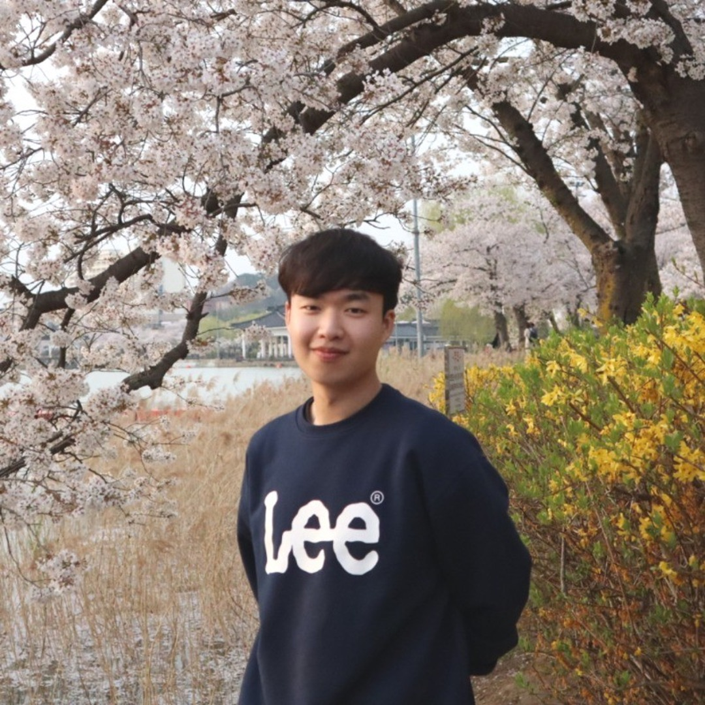

Research Scientist @ VUNO Inc.

Nahyuk Lee (Committee: Minsu Cho, Jungseul Ok, Seungyong Lee) [OASIS] [dCollection]
Nahyuk Lee*, Juhong Min*, Junhong Lee, Chunghyun Park, Minsu Cho (*equal contribution) [Bibtex]
Doohyun Park, Nahyuk Lee, Sungjoo Lim [OpenReview] [Bibtex]
Nahyuk Lee*, Juhong Min*, Junha Lee, Seungwook Kim, Kanghee Lee, Jaesik Park, Minsu Cho (*equal contribution) [Project Page] [arXiv] [Poster] [Bibtex] [Code]
Taemin Lee, Nahyuk Lee, Sanghyun Seo, Dongwann Kang [Open Access] [Bibtex] [Code]
Nahyuk Lee, Juhong Min, Junha Lee, Seungwook Kim, Kanghee Lee, Jaesik Park, Minsu Cho [PDF]
Seung Hyun Lee, Nahyuk Lee, Chanyoung Kim, Wonjeong Ryoo, Jinkyu Kim, Sang Ho Yoon, Sangpil Kim [Project Page] [PDF] [Bibtex]
Nahyuk Lee, Taemin Lee
[Open Access]
[Bibtex]
Nahyuk Lee, Taemin Lee
[DBPia]
[Bibtex]
Nahyuk Lee, Kyungtaek Lee, Youngsup Park, Sanghyun Seo, Taemin Lee [DBpia] [Bibtex]